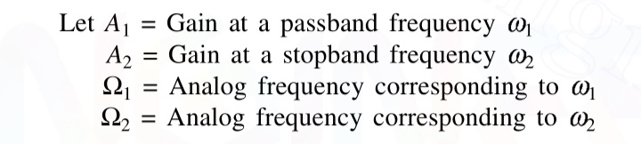
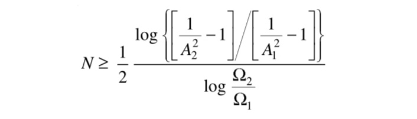
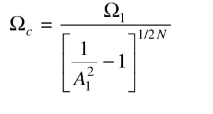
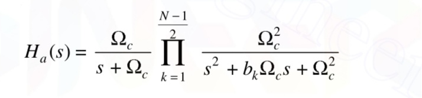
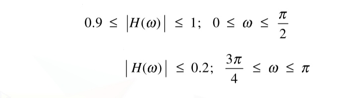
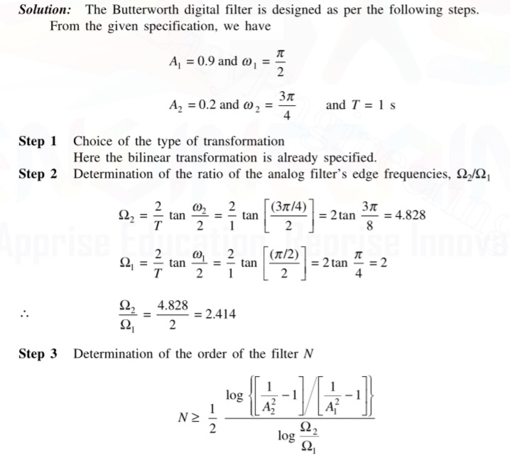
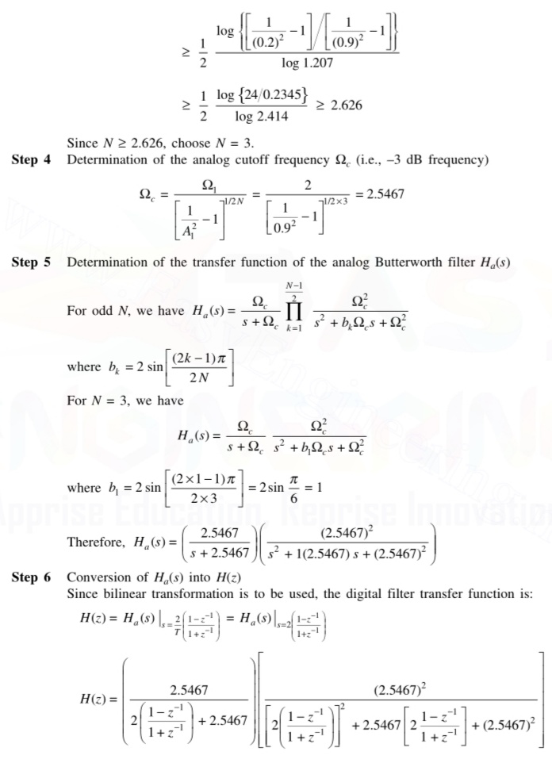
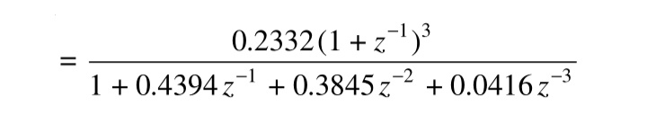

Design proceure for low-pass digital Butterworth llR filter
The low-pass digital Butterworth filter is designed as per the following steps:

step 1:Choose the type of transformation either bilinear or impulse invariant
step 2:Calculate the ratio of analog frequencies

step 3:Decide the order of filter N such that

step 4:Calculate the analog cutoff frequency

step 5:Determine the transfer function of analog filter.
If N id odd, then H(s) is given by
When the order N is odd,

where the coefficient bk is given by,
step 6:Convert the analog transfer function into digital one usinng the choen transformation
EXAMPLE 1:
Design a buttterworth digital filter using the bilinear transformation. The specifications of the desired low pass filter are:

with T=1 sec


